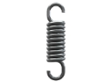

ПРУЖИНЫ РАСТЯЖЕНИЯ
Изготовление пружин растяжения на заказ партиями от 1-й штуки за 1-3 дня.
Выполним по разнообразным параметрам, чертежам или образцу, фото, эскизам.
- 
ИЗГОТОВЛЕНИЕ И ПРОИЗВОДСТВО ПРУЖИН РАСТЯЖЕНИЯ
Не знаете где купить пружины растяжения? Производственная компания ООО "Индустриал Спрингс", работающая на рынке Украины более 10 лет в области изготовления и реализации винтовых пружин, оказывает услуги проектирования и производства пружин растяжения разной величины (большие, маленькие), с различными техническими характеристиками и конструкциями (цилиндрические, конические, бочкообразные), а также разными элементами крепления (разомкнутое или стандартное кольцо, крючок, резьбовая шпилька). Заказать и купить у нашего предприятия пружины растяжения можно с классическими параметрами (некоторые из них в наличии), так и с индивидуальными (по образцам и чертежам заказчика).
Винтовые пружины растяжения используются практически везде: от машиностроения до изготовления гаражных секционных ворот и автомобильных прицепов. Процесс изготовления пружин до момента их отправки заказчику включает этап проектирования каждой пружины исходя из нагрузок, сферы использования, типа эксплуатации. Выпуская пружины растяжения в большом ассортименте, ООО "Индустриал Спрингс" удовлетворяет запросы абсолютно всех наших клиента.
В производстве пружин мы используем качественные стали (нержавеющие, легированные, углеродистые, и теплоустойчивые), а также специализированное оборудование, что позволяет нам изготавливать пружины растяжения, соответствующие нормам ГОСТа. Менеджера нашей компании помогут вам рассчитать и подобрать пружины растяжения с необходимым диаметром проволоки и материалом по розничным и оптовым ценам. Для оформления заказа или консультации свяжитесь с нами через форму заявки либо по телефону.